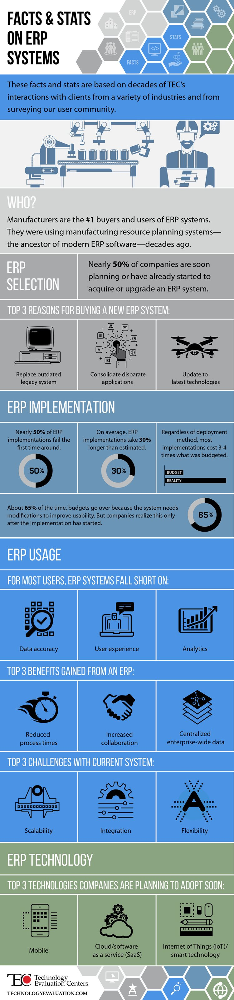

Providing efficient software solutions for medical facilities and small businesses. Call us now on Tel:+256771756398. You can also email us at msinstallations@yandex.com
ERP is usually referred to as a type of business management software, typically a suite of integrated applications that an organization can use to collect, store, manage, and interpret data from many business activities
We install:
Developing economies like Uganda need to utilise ERP systems in their medium to large businesses to make them more efficient and take them towards regional and global competitiveness.
Other benefits include:
Here are the statistics.
The global enterprise resource planning (ERP) software market is forecast to grow to around 86 billion U.S. dollars by 2022. Enterprise resource planning (ERP) Enterprise resource planning (ERP) refers to the business process management software that allows businesses to integrate different aspects of business operations in one database, application and user interface. It is a type of enterprise software, which also includes human resource management (HRM) systems, customer relationship management (CRM), office suites, etc. The market is forecast to witness growth in the coming year – overall IT spending on enterprise software is projected to grow to 462 billion U.S. dollars by 2020. In comparison to other IT segments such as data center systems and hardware devices, enterprise software has a more consistent growth pattern, signaling businesses’ steady and high demand of software support.
Data from Statista
